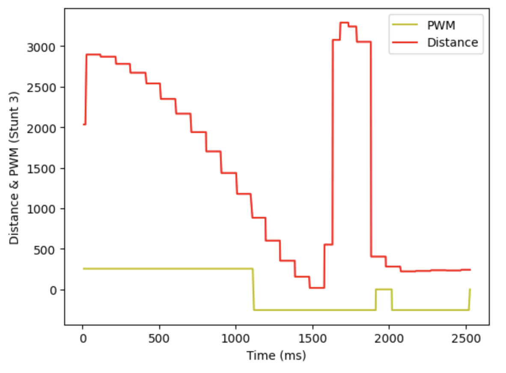
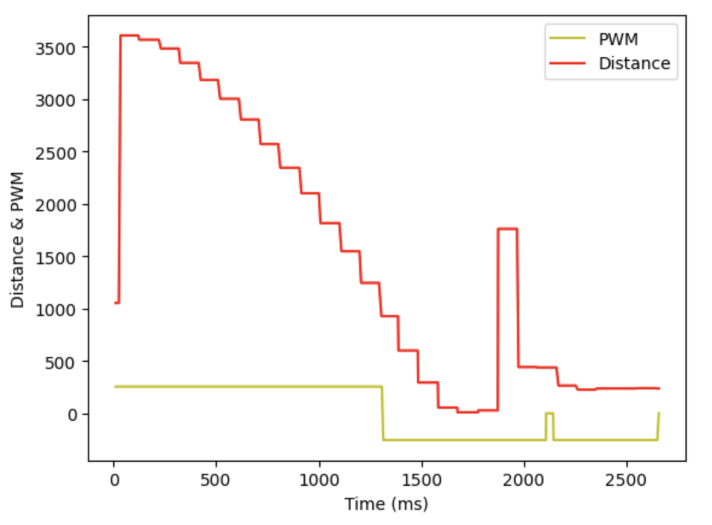

Introduction
In this lab section, one of the tasks will be selected for stunt recording. I have chosen Task A: Position Control to execute the robot flip motion. This task will demonstrate the robot's ability to accurately control its position and perform a complex maneuver, highlighting the effectiveness of the implemented control algorithms and the robustness of the Kalman Filter in dynamic scenarios.
Parts required
- 1 x Fully assembled robot, with Artemis, ToF sensor, and an IMU.
Flip
First, a command called Flip is created to start the flip action
case FLIP: flip_on = false; success = robot_cmd.get_next_value(set_distance); Serial.print("Set distance: "); Serial.println(set_distance); if (!success) return; flip_start_time = (float)millis(); flip_on = true; break;
In the flip() function, a state machine is implemented to control the flip stunt.
- State 0: When
flip_stateis 0, the robot enters the full-speed mode to approach the wall. Due to potential issues with the robot not detecting the distance correctly, it will continue moving indefinitely. To prevent this, a timeout condition is added to stop the robot after 5 seconds if it hasn't transitioned to the next state. - State 1: This state records the start time of the flip maneuver.
- States 2, 3, and 4: These states handle the sequential actions needed to perform the flip: moving backwards, stopping, and moving backwards again.
- Final State: The robot comes to a complete stop, marking the end of the flip maneuver.
This structured state machine ensures the flip stunt is executed with precise control, accounting for potential sensor inaccuracies and ensuring the robot performs the desired actions within a safe and defined timeframe.
// Function for flip stunt void flip() { distanceSensor2.startRanging(); flip_distance = distanceSensor2.getDistance(); distanceSensor2.clearInterrupt(); distanceSensor2.stopRanging(); // State machine for flip // Full speed forward state if (flip_state == 0) { flip_pwm = 255; forward(flip_pwm); Serial.println("Forward"); if (flip_distance < set_distance) { flip_state = 1; Serial.println("Start record time"); } flip_curr_time = (float)millis(); if ((flip_curr_time - flip_start_time) > 5000) { stop(); flip_on = false; Serial.println("Timeout!"); } } // Reach the distance and record start time else if (flip_state == 1) { flip_start_time = (float)millis(); flip_state = 2; Serial.println("Start flip"); } // Start flip // 1. Backward else if (flip_state == 2) { flip_curr_time = (float)millis(); if ((flip_curr_time - flip_start_time) < 800) { flip_pwm = -255; analogWrite(AB1IN_LEFT,0); analogWrite(AB2IN_LEFT,abs(flip_pwm)); analogWrite(AB1IN_RIGHT,0); analogWrite(AB2IN_RIGHT,abs(flip_pwm)); Serial.println("Backward"); } else { flip_start_time = (float)millis(); flip_state = 3; } } // 2. Stop else if (flip_state == 3) { flip_curr_time = (float)millis(); if ((flip_curr_time - flip_start_time) < 100) { flip_pwm = 0; stop(); Serial.println("Stop"); } else { flip_start_time = (float)millis(); flip_state = 4; } } // 3. Backward else if (flip_state == 4) { flip_curr_time = (float)millis(); if ((flip_curr_time - flip_start_time) < 500) { flip_pwm = -255; backward(abs(flip_pwm)); Serial.println("Backward"); } // 4. Stop the flip else { flip_pwm = 0; stop(); Serial.println("Stop"); flip_on = false; } } }
Data Recording
To obtain the flip data, we wrote the command SENDING_FLIP_DATA to transmit the recorded data through the BLE channel to the laptop. Notably, the initiation of the flip occurs when the distance to the wall falls below 1000ms, and during the backward movement phase, the motors are briefly stopped to execute the flip stunt seamlessly. The subsequent program is designed to facilitate the transfer of recorded flip data to the laptop via the BLE channel. This enables us to analyze and evaluate the performance of the flip maneuver, providing insights into its execution and effectiveness.
We also draw the time vs PWM and time vs distance diagrams for two successful stunts.
 Conclusion
In conclusion, this lab section focused on selecting one task from the provided instructions and successfully recording three stunts. Particularly, significant enhancements were made to the flip code, incorporating a robust state machine and implementing a timeout function. These improvements not only streamline the execution of the flip maneuver but also mitigate potential issues, such as continuous movement due to inaccurate distance detection. By leveraging these advancements, the robot can reliably perform the flip stunt with precision and consistency. Additionally, the introduction of the timeout function ensures the safety of the operation by preventing the robot from endlessly moving in case of sensor malfunctions or unexpected conditions. Overall, this lab section demonstrated the effectiveness of implementing advanced control strategies and safety mechanisms to achieve desired robotic behaviors and enhance overall performance.